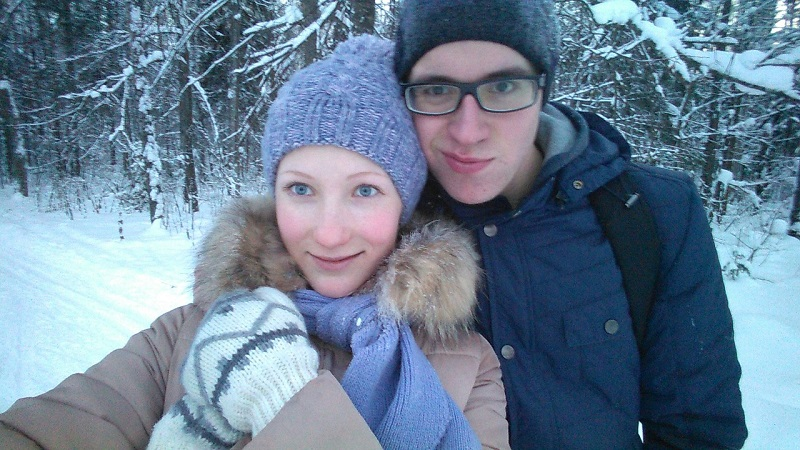
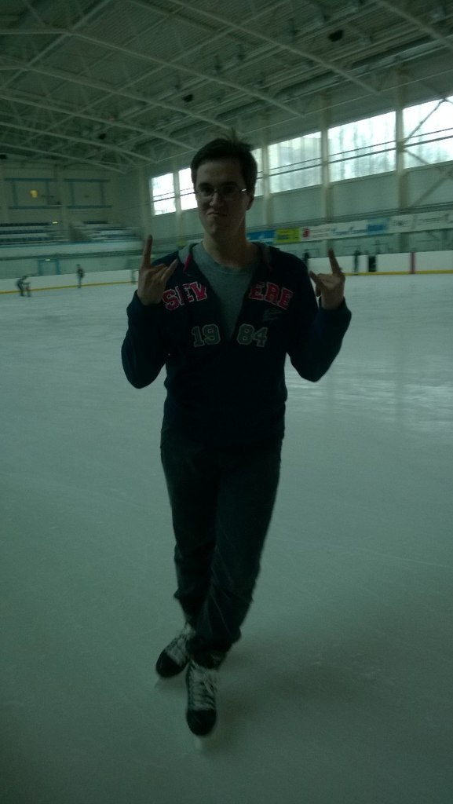
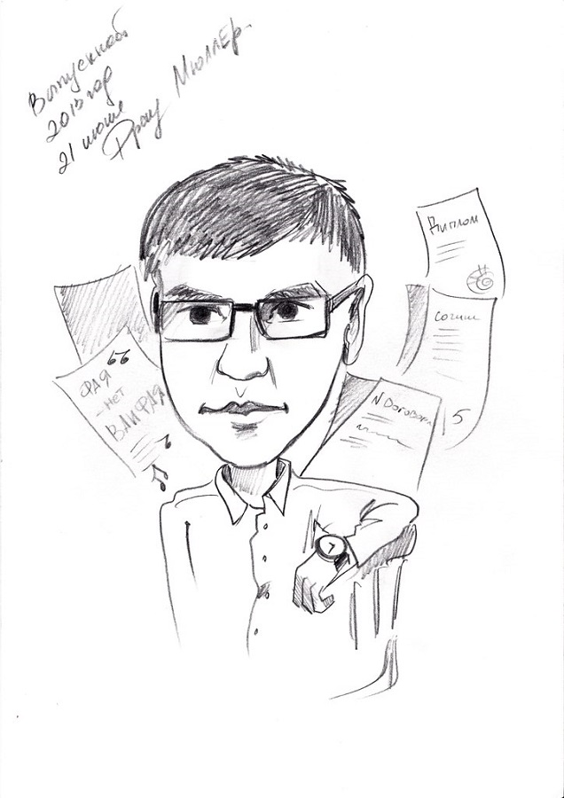
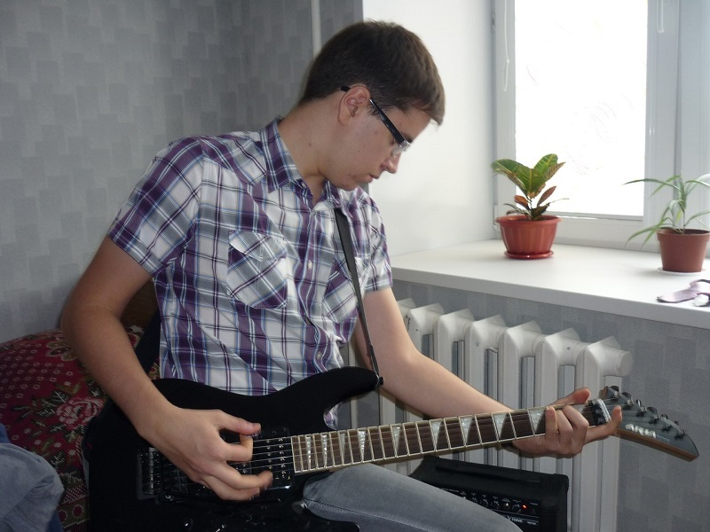
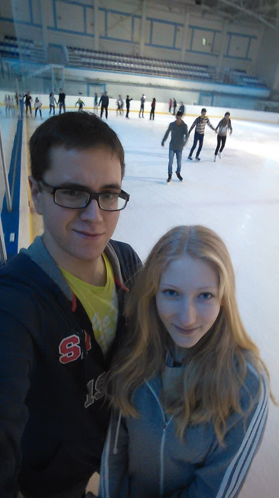

Мы с девушкой на лыжах по дороге в Корту

Здесь я во время катания в Ледовом Дворце

Так каждого из моего выпуска поздравил ресторан, где мы праздновали.

Раньше я баловался и электрогитарой, но сейчас это в прошлом.

Снова на коньках, только уже вместе с девушкой.